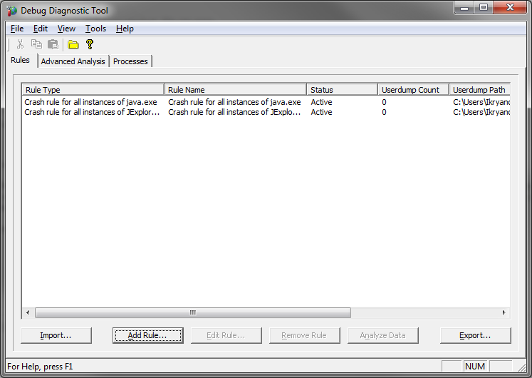
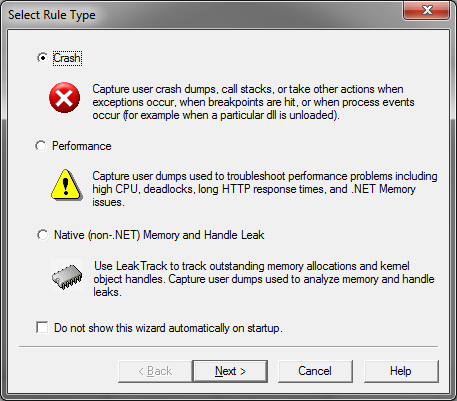
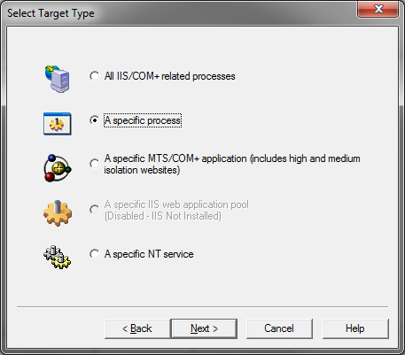
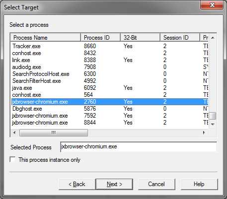
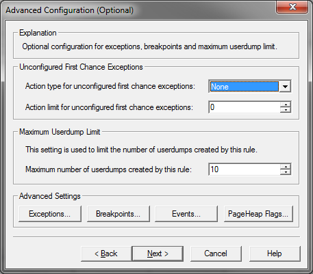
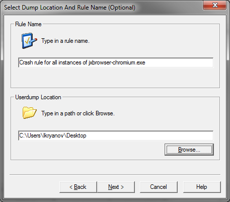
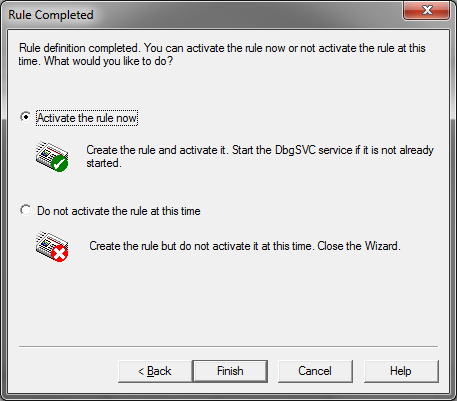

Note: Advice in this article will only work for JxBrowser 6. See the corresponding article for JxBrowser 7 here.(注意：本文中的建议仅适用于JxBrowser6，JxBrowser7相应文章请点击这里。)
Getting crash dump file(获取故障转储文件)
By default, on Windows platforms, when Chromium engine is crashed, JxBrowser generates jxbrowser-chromium.dmp crash dump file and stores it in the %localappdata%\JxBrowser\ directory (e.g. c:\users\<username>\appdata\local\JxBrowser\jxbrowser-chromium.dmp).(默认情况下，在Windows平台上，当Chromium引擎崩溃时，JxBrowser会生成jxbrowser-chromium.dmp故障转储文件并将其存储在％localappdata％\ JxBrowser \目录中（例如c：\ users \ <用户名> \ appdata \ local \ JxBrowser \ jxbrowser-chromium.dmp）。)
When you see that Chromium engine is unexpectedly terminated or crashed, please go to the %localappdata%\JxBrowser\ directory and share with us the jxbrowser-chromium.dmp file using an online file sharing service such as Dropbox, Google Drive, etc.(当您发现Chromium引擎意外终止或崩溃时，请转到％localappdata％\ JxBrowser \目录，并使用在线文件共享服务（例如Dropbox，Google云端硬盘等）与我们共享jxbrowser-chromium.dmp文件。)
Configuring crash dump folder(配置故障转储文件夹)
To change directory where crash dump files will be generated to and stored, use the jxbrowser.dmp.dir System Property. For example: (要更改将生成故障转储文件并将其存储的目录，请使用jxbrowser.dmp.dir系统属性。例如：)
System.setProperty("jxbrowser.dmp.dir", "C:\\JxBrowser\\crash-dumps");
Disabling crash dump generation(禁用故障转储生成)
To disable crash dump generation set the jxbrowser.dmp.dir System Property to an empty string:(要禁用故障转储生成，请将jxbrowser.dmp.dir系统属性设置为空字符串：)
System.setProperty("jxbrowser.dmp.dir", "");
Getting crash dump file using Microsoft Debug Diagnostic Tool(使用Microsoft Debug Diagnostic Tool获取故障转储文件)
To debug JxBrowser native binaries please use Microsoft Debug Diagnostic Tool to catch all exceptions in jxbrowser-chromium.exe processes.(要调试JxBrowser本机二进制文件，请使用Microsoft Debug Diagnostic Tool来捕获jxbrowser-chromium.exe进程中的所有异常。)
Here's instruction about how to configure this software to catch all native crashes/exceptions: (这是有关如何配置此软件以捕获所有本机崩溃/异常的说明：)
1. Download Microsoft Debug Diagnostic Tool (both 32- and 64-bit versions).(1.下载Microsoft Debug Diagnostic Tool（32位和64位版本）。)
2. Install it in your target Windows environment. To install it just run MSI file.(2.将其安装在目标Windows环境中。要安装它，只需运行MSI文件。)
3. Run your application and create at least one Browser instance.(3.运行您的应用程序，并至少创建一个浏览器实例。)
4. Run Debug Diagnostic Tool and follow the instruction below:(4.运行调试诊断工具，然后按照以下说明进行操作：)
4.1. Click Add Rule... button:
(4.1。单击添加规则...按钮：)

4.2. Select Rule Type - Crash and click Next:(4.2。选择“规则类型-崩溃”，然后单击“下一步”：)
{kind=link}

4.3. Select A specific process and click Next(4.3。选择一个特定的过程，然后单击下一步)
{kind=link}

4.4. In the list of opened processes select jxbrowser-chromium.exe and click Next(4.4。在打开的进程列表中，选择jxbrowser-chromium.exe，然后单击“下一步”。)
{kind=link}

4.5. Click Next(4.5。点击下一步)
{kind=link}

4.6. Select directory where Tool will save Dump files (e.g. on your Desktop) and click Next:(4.6。选择工具将在其中保存转储文件的目录（例如在您的桌面上），然后单击下一步：)
{kind=link}

4.7. Select Activate Rule Now and click Finish(4.7。选择立即激活规则，然后单击完成)
{kind=link}
